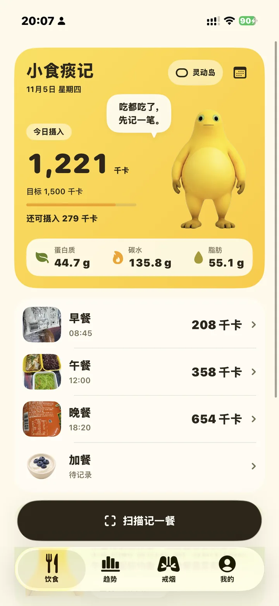
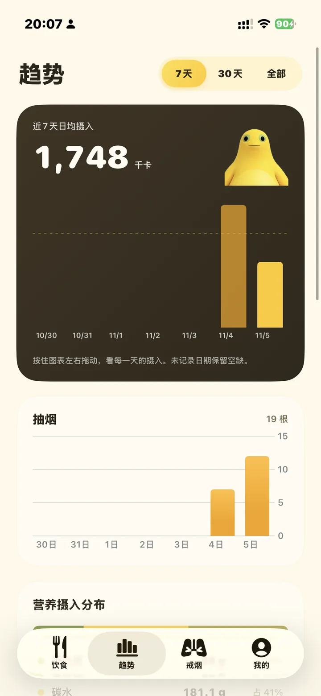
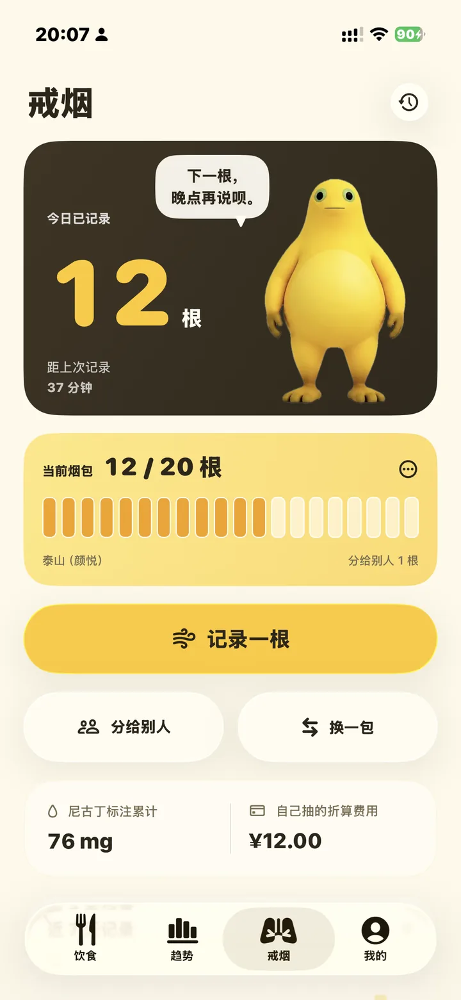
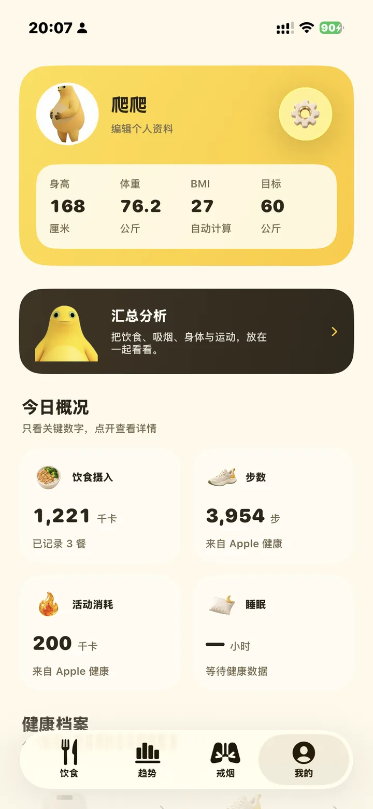

拍照或说一句，AI 帮你估算热量与营养。也把每一根烟、每一次身体变化，认真记下来。
适用于 iPhone · iOS 26 及以上
吃都吃了，先记一笔。
拍餐食，也能拍营养成分表。AI 先估算，你确认后再保存。
拍照或说一句
AI 估算热量与营养
确认后保存

自抽与分烟分开记，健康数据按需读取。

7 天、30 天及全部记录，按时间看看饮食变化。

自抽和分烟，分开记清楚。

把饮食、活动和身体变化，放在一起看看。
分析前确认发送内容，云同步按需开启。